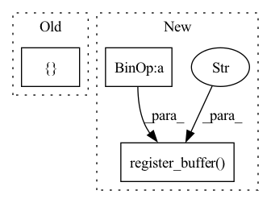

Pattern ID :708
Before Change
self.cuda_ray = cuda_ray
if cuda_ray:
// density grid
density_grid = torch.zeros([self.cascade] + [ 128After Change
if cuda_ray:
// density grid
density_grid = torch.zeros([self.cascade] + [self.grid_size] * 3) // [CAS, H, H, H]
density_bitfield = torch.zeros(self.cascade * self.grid_size ** 3 // 8, dtype=torch.uint8) // [CAS * H * H * H // 8]
self.register_buffer("density_grid", density_grid)
self.register_buffer("density_bitfield" , density_bitfield)
self.mean_density = 0
self.iter_density = 0
// step counter
step_counter = torch.zeros(16, 2, dtype=torch.int32) // 16 is hardcoded for averaging...In pattern: SUPERPATTERN
Frequency: 3
Non-data size: 3
Instances Fragment ID: 2447653
Project Name: ashawkey/torch-ngp
Commit Name: d647b184af5114160e8b8c3d3d2a198eaa8af3bb
Time: 2022-05-21
Author: ashawkey1999@gmail.com
File Name: nerf/renderer.py
M Class Name: NeRFRenderer
N Class Name: NeRFRenderer
M Method Name: __init__(6)
N Method Name: __init__(4)
M Parent Class: nn.Module
N Parent Class: nn.Module
M File Name: nerf/renderer.py
N File Name: nerf/renderer.py
M Start Line: 84
M End Line: 84
N Start Line: 66
N End Line: 92
Before Change
self.rank = rank
if len(empty_idx) == 0:
empty_idx = [ self.rank + 1After Change
empty_idx = set(empty_idx)
assert all(isinstance(x, int) for x in empty_idx)
self.param_rank = self.rank - len(empty_idx)
mask = torch.zeros((self.rank, self.param_rank))
c = 0
for r in range(self.rank):
if r not in empty_idx:
mask[r, c] = 1.
c += 1
self.register_buffer("mask" , mask)
self._set_params(method, init_diag_multi)
self.var_predict_module = predict_variance Fragment ID: 2447649
Project Name: strongio/torchcast
Commit Name: 8880c7a14cf77655f500f452fcc29cf2825c4422
Time: 2021-07-11
Author: jacob.dink@strong.io
File Name: torchcast/covariance/base.py
M Class Name: Covariance
N Class Name: Covariance
M Method Name: __init__(7)
N Method Name: __init__(7)
M Parent Class: nn.Module
N Parent Class: nn.Module
M File Name: torchcast/covariance/base.py
N File Name: torchcast/covariance/base.py
M Start Line: 154
M End Line: 160
N Start Line: 154
N End Line: 165
Before Change
pad_size = [get_padding(filt_size, stride, dilation=1)] * 4
self.padding = nn.ReflectionPad2d(pad_size)
self._coeffs = torch.tensor((np.poly1d((0.5, 0.5)) ** (self.filt_size - 1)).coeffs) // for torchscript compat
self.filt = {} // lazy init by device for DataParallel compat
def _create_filter(self, like: torch.Tensor):
blur_filter = (self._coeffs[:, None] * self._coeffs[None, :]).to(dtype=like.dtype, device=like.device)After Change
self.stride = stride
self.padding = [get_padding(filt_size, stride, dilation=1)] * 4
coeffs = torch.tensor((np.poly1d((0.5, 0.5)) ** (self.filt_size - 1)).coeffs.astype(np.float32))
blur_filter = (coeffs[:, None] * coeffs[None, :])[None, None, :, :].repeat(self.channels, 1, 1, 1)
self.register_buffer("filt" , blur_filter, persistent=False)
def forward(self, x: torch.Tensor) -> torch.Tensor:
x = F.pad(x, self.padding, "reflect")
return F.conv2d(x, self.filt, stride=self.stride, groups=x.shape[1]) Fragment ID: 2447648
Project Name: feng-lab/pytorch-image-models
Commit Name: 0d87650fea5ce607d07204806e8143a48917d96f
Time: 2021-05-04
Author: rwightman@gmail.com
File Name: timm/models/layers/blur_pool.py
M Class Name: BlurPool2d
N Class Name: BlurPool2d
M Method Name: __init__(4)
N Method Name: __init__(4)
M Parent Class: nn.Module
N Parent Class: nn.Module
M File Name: timm/models/layers/blur_pool.py
N File Name: timm/models/layers/blur_pool.py
M Start Line: 40
M End Line: 43
N Start Line: 32
N End Line: 38